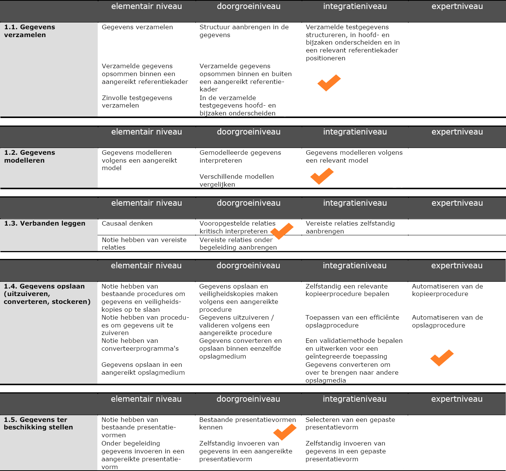
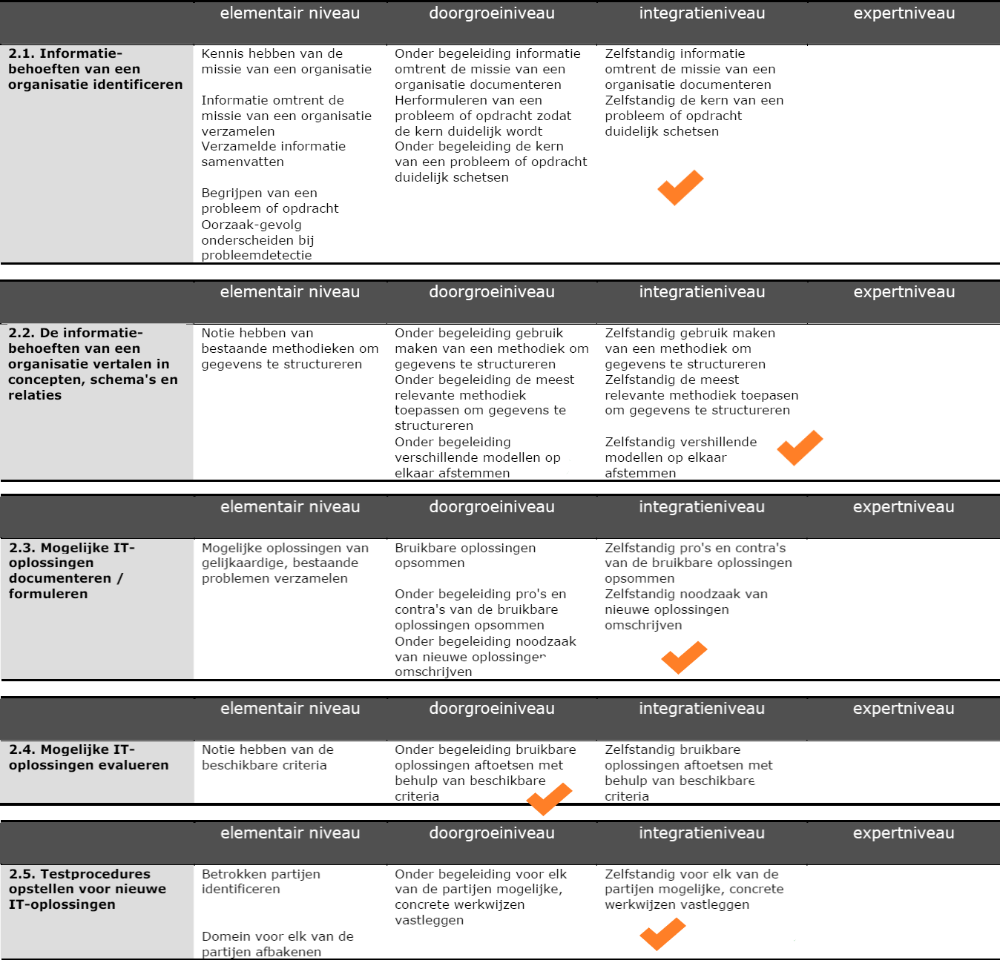
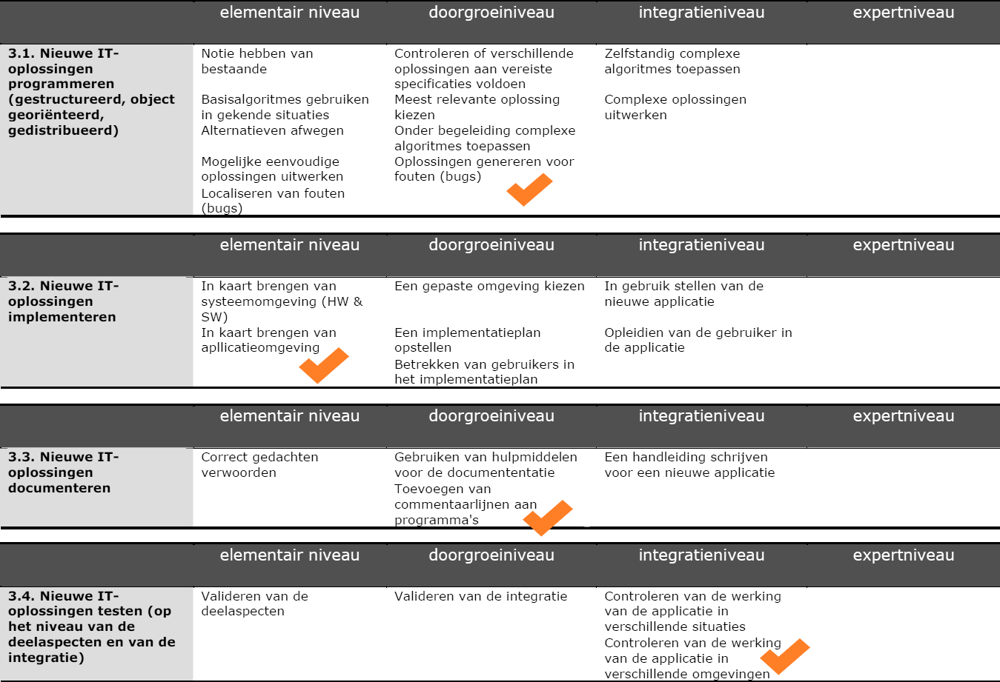
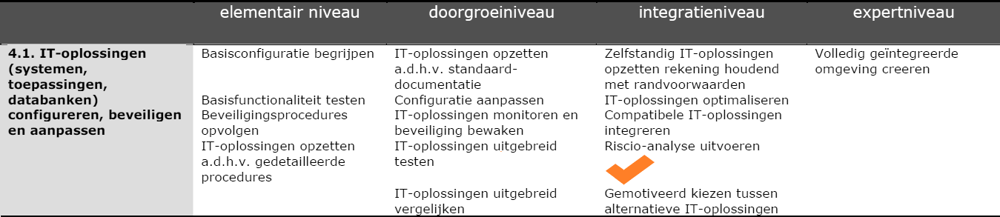
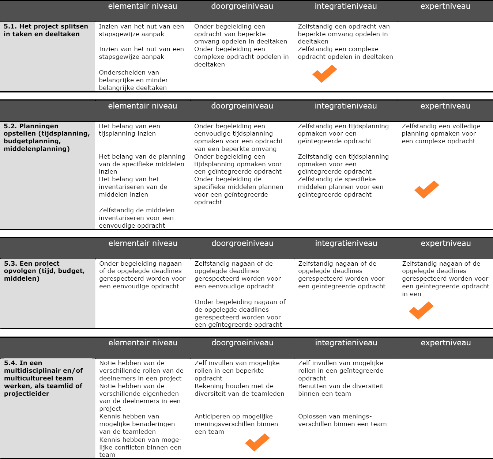
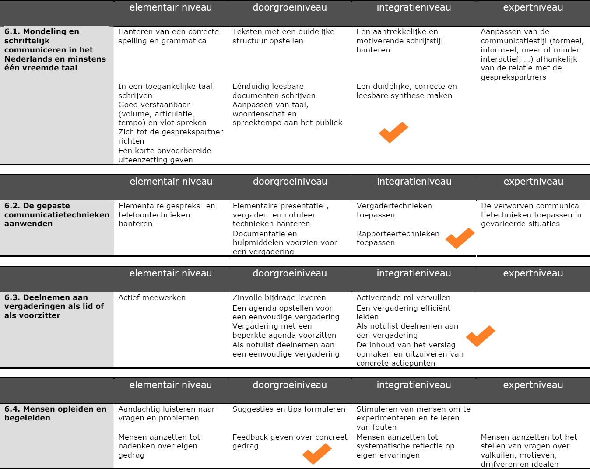
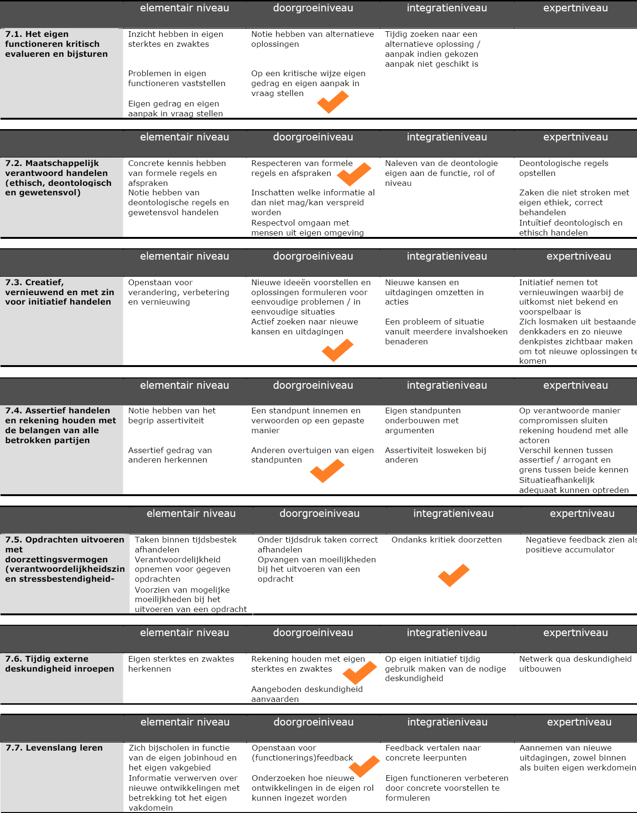
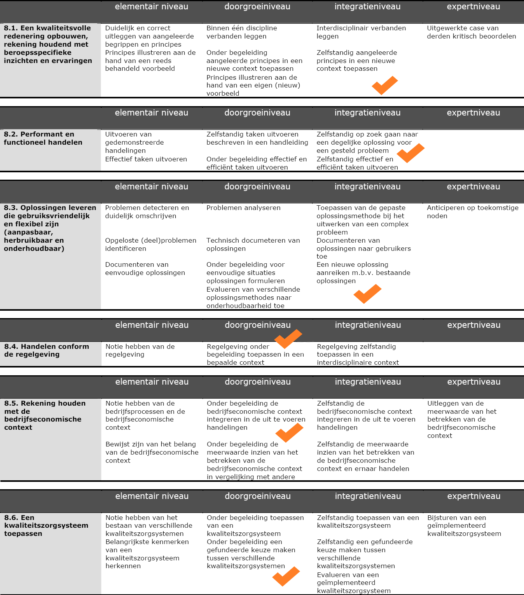

1. Gegevens behandelen
Mijn niveau op het einde van het tweede jaar: Niveau 2
Bewijsstuk dat dit kan aantonen: Presentatie Subqueries
2. Analyseren
Mijn niveau op het einde van het tweede jaar: Niveau 2
Bewijsstuk dat dit kan aantonen: Technieken voor datamodellering bedrijf analyseren
3. Oplossingen uitwerken
Mijn niveau op het einde van het tweede jaar: Niveau 2
Bewijsstukken die dit aantonen: Handleiding Cucumber (zelf gekozen onderwerp) en Handleiding Github + Kitkraken
4. Beheren
Mijn niveau op het einde van het tweede jaar: Niveau 1
5. Projectmatig werken
Mijn niveau op het einde van het tweede jaar: Niveau 3
Bewijsstuk dat dit kan aantonen: opleiden en begeleiden
6. Communiceren
Mijn niveau op het einde van het tweede jaar: Niveau 2
Bewijsstuk dat dit kan aantonen: observatiestage
7. Eigen gedrag aanpassen
Mijn niveau op het einde van het tweede jaar: Niveau 2
8. Kwaliteitsvol handelen
Mijn niveau op het einde van het tweede jaar: Tussen niveau 2-3